La historia de TheUrbanGarage
En Granada, donde las noches se iluminan con el reflejo de los faros sobre el asfalto y el eco de los motores rebota entre las calles, comenzó una historia que nadie imaginó que acabaría tan lejos. Todo empezó con encuentros casuales en quedadas de coches organizadas por otros grupos. Eran eventos sin grandes pretensiones: grupos dispersos, coches humildes pero cuidados con cariño, y conversaciones sueltas entre desconocidos que compartían la misma pasión.
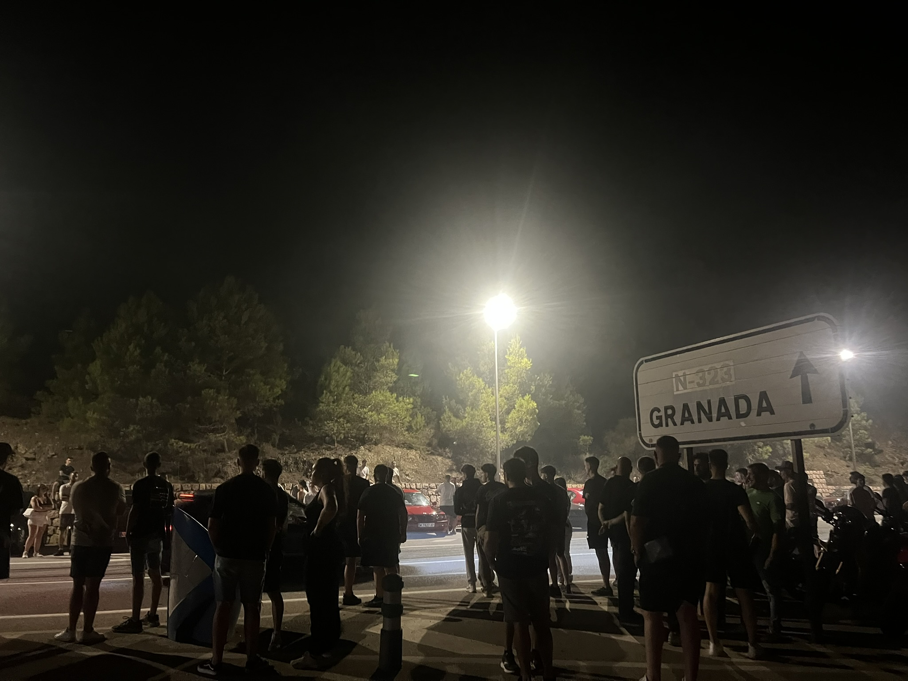
Los primeros rostros
Entre aquellos asistentes habituales estaban Daniel, Manolo, Borja, Abraham y Sergio. Nunca quedaban juntos de forma premeditada, pero siempre coincidían. Cada encuentro seguía el mismo patrón: primero una mirada cómplice al escuchar un motor conocido, luego un gesto con la cabeza, y finalmente esas charlas improvisadas sobre averías, trucos baratos para reparar piezas, o simplemente sobre la vida.
Con el paso del tiempo, sin darse cuenta, empezaron a buscarse entre la multitud de coches. Si uno llegaba y no veía a los otros, enviaba algún que otro mensaje privado o preguntaba por ellos entre los grupos. Aquello dejó de ser casual: era amistad en construcción.
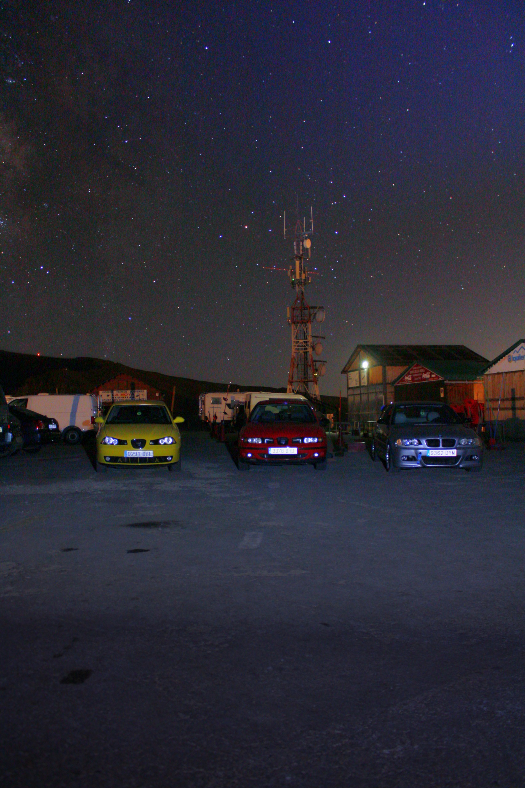
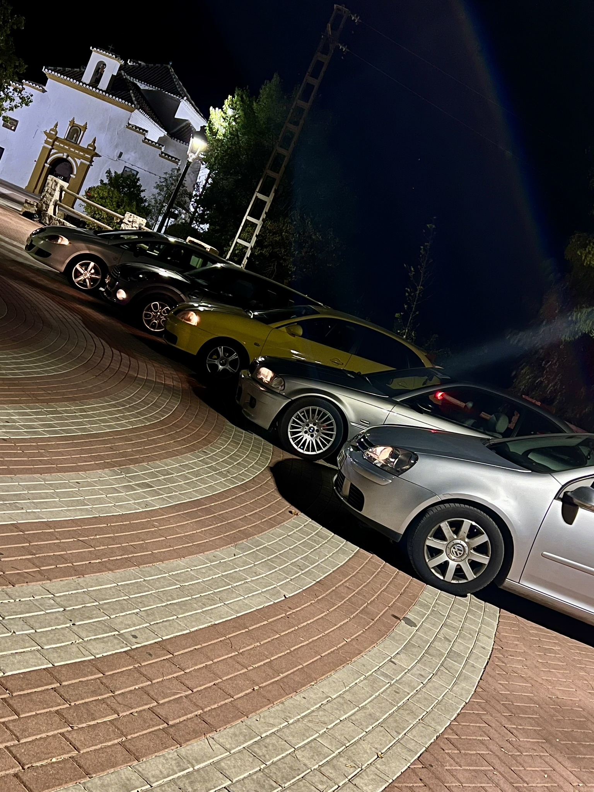
El impulso
Un día, después de que a Daniel se le quedara tirado su viejo BMW Serie 3 318ci, todos corrieron a ayudarlo. Lo empujaron, lo revisaron con linternas del móvil y al final consiguieron moverlo. Esa noche, entre risas y grasa en las manos, surgió la idea que cambiaría todo.
— «Tío, deberíamos hacer un grupo de WhatsApp» —dijo Manolo mientras se limpiaba las manos en una
servilleta del McDonald's.
— «Sí, para no tener que depender de coincidir por suerte» —respondió Sergio.
Y así nació un grupo que empezaron llamando "TheUrbanGarage".
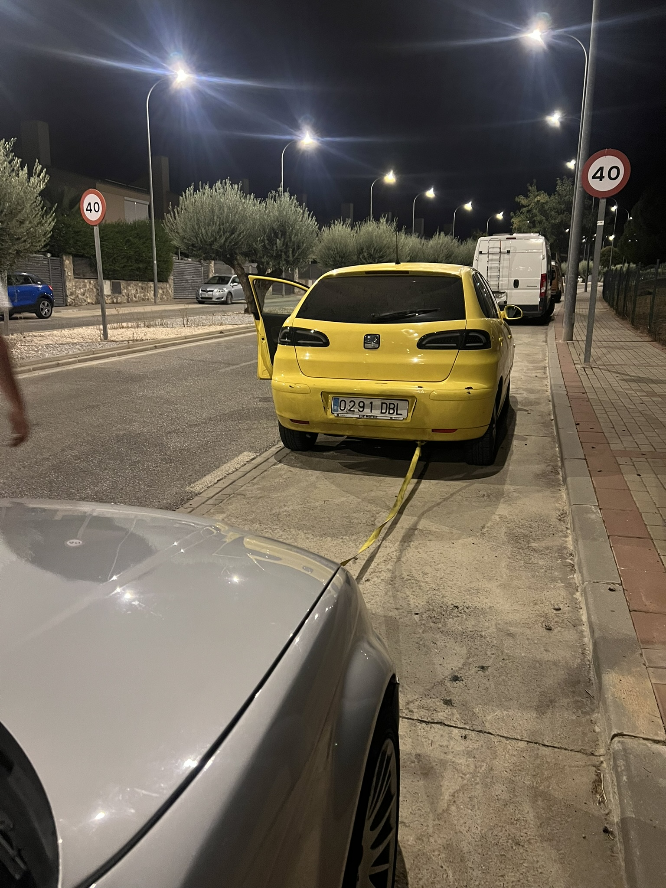
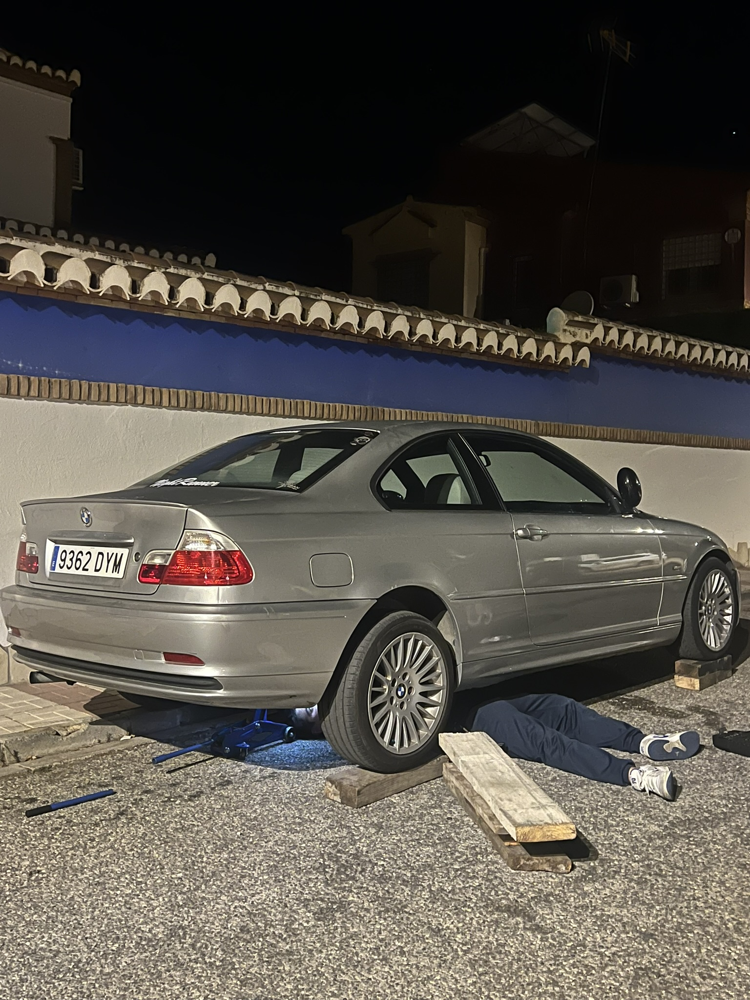
El crecimiento
Cada uno agregó a un amigo que compartía la misma afición, y esos amigos agregaron a otros. Lo que empezó como cinco personas pasó a ser ocho, luego diez, y finalmente doce. Doce personas muy distintas: basureros, mecánicos, camioneros, informáticos, camareros… pero unidos por una misma pasión: los coches viejos, pero hechos en condiciones y llenos de historias.
Con el tiempo, el grupo dejó de ser un chat sobre coches. Se convirtió en un sitio donde se hablaba de todo: problemas personales, anécdotas del curro, fotos de comidas, memes malos y debates interminables sobre si un 1.9 TDI era eterno o simplemente sobrevalorado (spoiler: es indestructible). Había confianza, bromas internas, y un sentimiento que ninguno esperaba encontrar: era como una familia.
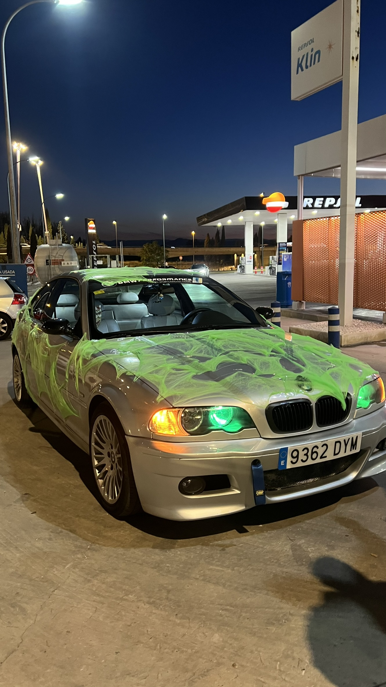
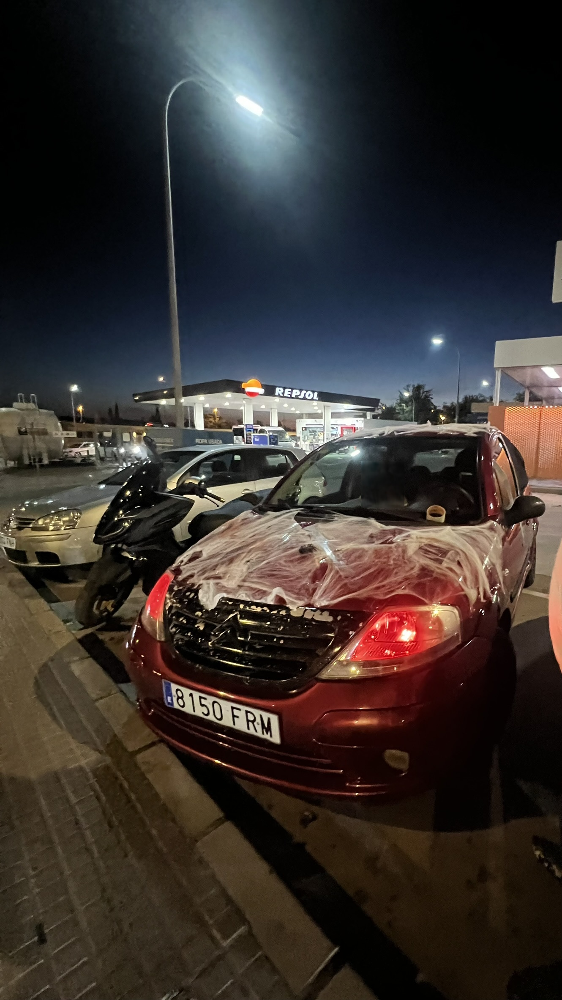
Manos a la obra
Su rutina se volvió especial. Los fines de semana quedaban en descampados o garajes improvisados. Se ayudaban mutuamente a cambiar diferenciales, limpiar circuitos de anticongelante, reparar bombas de gasoil, cambiar amortiguadores... Eran coches de los años 2000 a 2010, algunos con heridas de guerra visibles, otros con apaños caseros que solo ellos entendían. Pero todos funcionaban gracias a su empeño.
Poco a poco, la cosa fue a más. Lo que al principio eran arreglos sencillos terminó convirtiéndose en reparaciones serias. Aprendieron entre todos: viendo tutoriales, preguntando en foros, experimentando sin miedo. Y, sobre todo, confiando unos en otros.
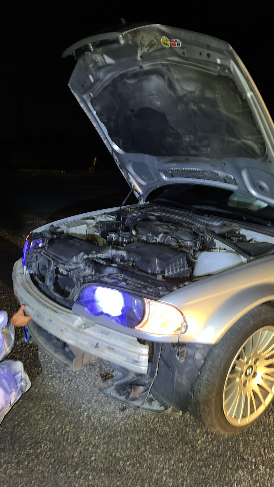
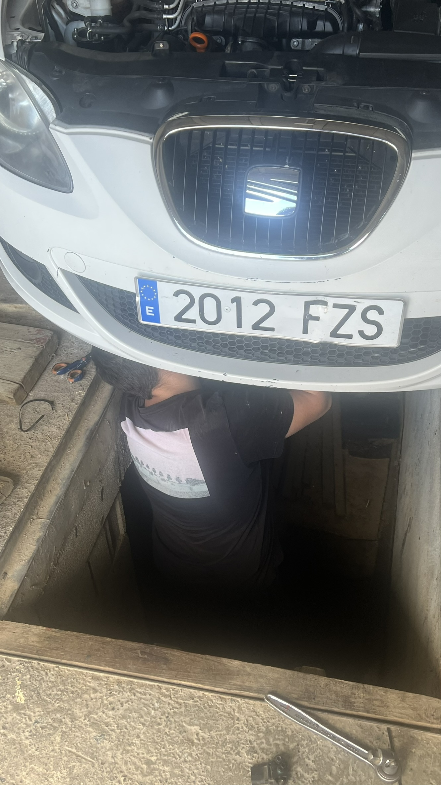
El gran sueño
Hasta que un día, en uno de esos momentos donde las ideas absurdas suenan demasiado bien, Daniel dijo:
— «¿Y si montáramos un taller entre todos?»
Los demás se rieron al principio. Parecía un sueño demasiado grande, demasiado loco. Pero la idea quedó rondando.
Semanas después, estaban hablando del tema más en serio. Entre los doce, sumaban conocimientos suficientes como para al menos intentarlo: algunos sabían de mecánica, otros de electricidad, otros de gestión, diseño, informática. Y lo más importante: tenían ganas.
Empezaron a buscar locales. Uno estaba demasiado caro. Otro demasiado pequeño. Otro parecía perfecto hasta que descubrieron humedades de veinte años. Pero no se rindieron.
Finalmente encontraron un pequeño local en las afueras de Granada, antiguo, descuidado, pero con espacio suficiente para empezar. Pasaron días limpiándolo, pintando paredes, instalando herramientas que compraban poco a poco entre todos.
Cuando por fin levantaron la persiana por primera vez, con un cartel sencillo que decía “Taller TheUrbanGarage”, se miraron los doce, emocionados. No eran empresarios profesionales, ni tenían estudios avanzados en mecánica, pero tenían algo más valioso: una amistad que nació sin querer y acabó convirtiéndose en un sueño compartido.
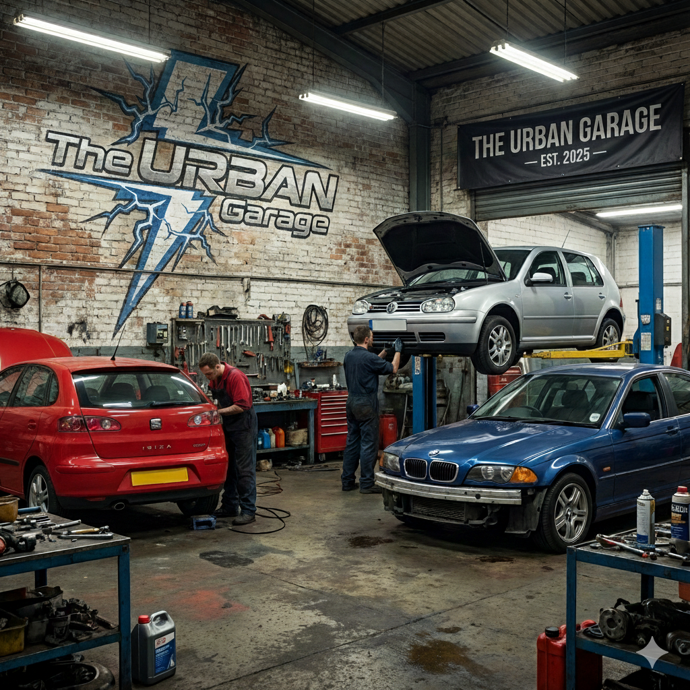
Categorías
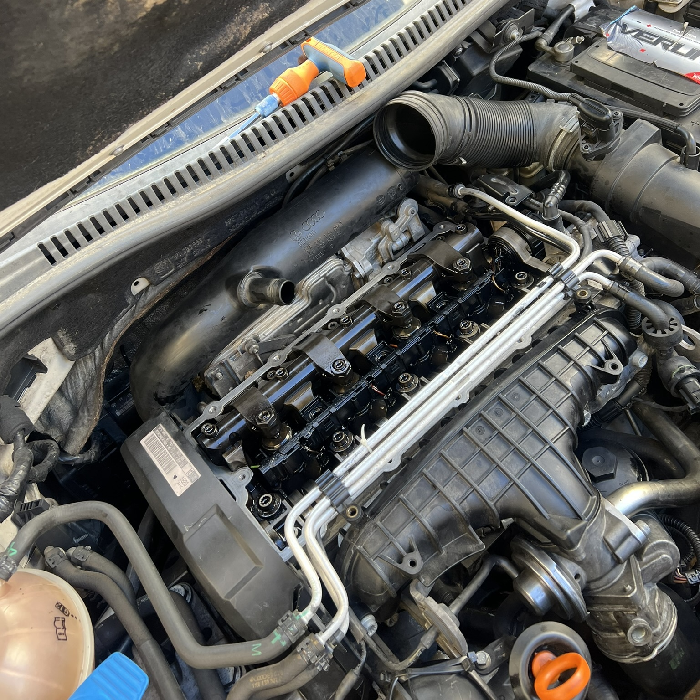
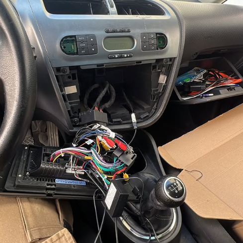
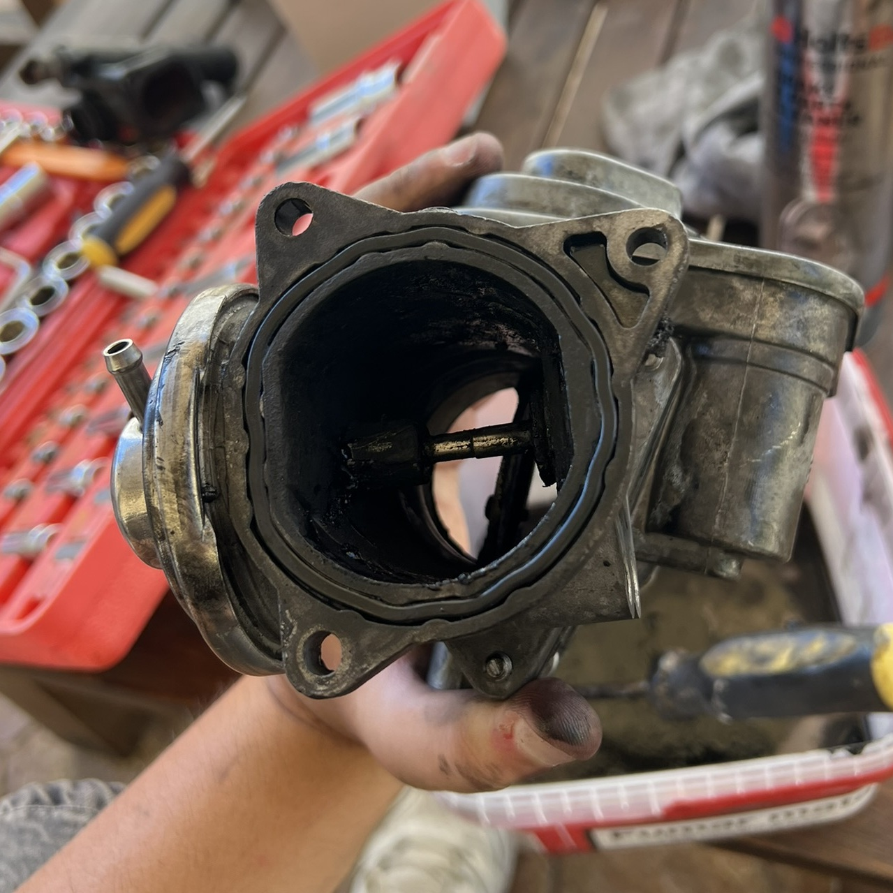
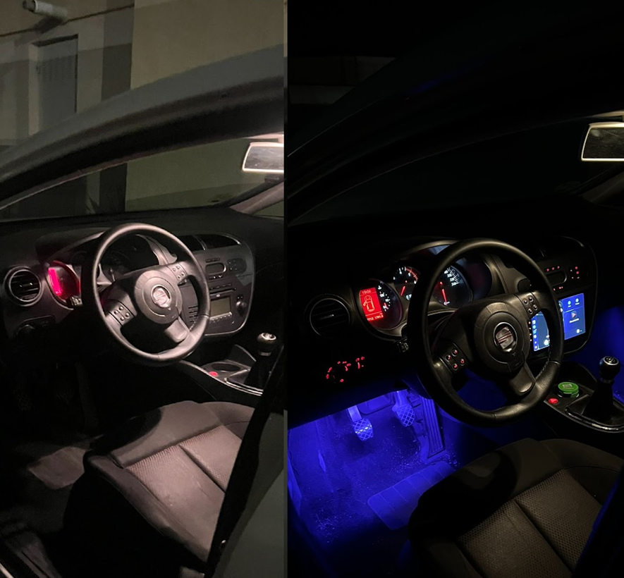

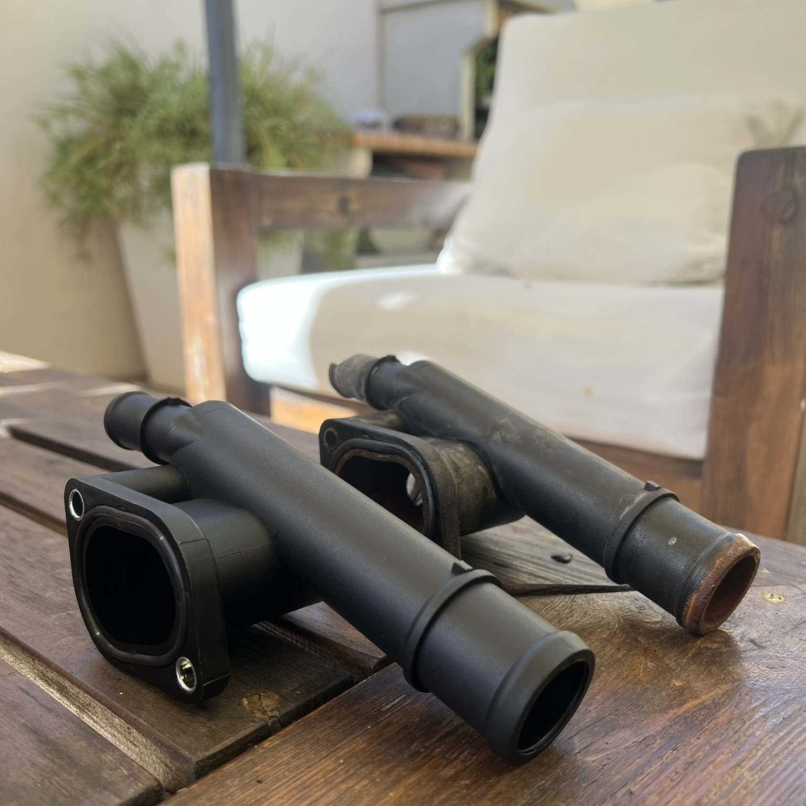
Nuestra filosofía
En nuestro taller creemos que un buen servicio de mecánica no tiene por qué ser complicado ni lento. Nos especializamos en mantenimiento y reparaciones esenciales, ofreciendo soluciones rápidas sin perder de vista lo más importante: la confianza. Cada vehículo que recibimos pasa por una revisión clara y directa, sin tecnicismos innecesarios ni sorpresas de última hora. Explicamos cada paso del proceso, desde el diagnóstico hasta la entrega, para que siempre sepas qué necesita tu coche y por qué.
Contamos con un equipo cercano y experimentado, acostumbrado a resolver averías comunes en tiempos ajustados, ideal para quienes no pueden permitirse dejar el vehículo parado durante días. Utilizamos repuestos fiables y técnicas contrastadas que garantizan resultados duraderos sin inflar el coste. Nuestro objetivo es que puedas continuar con tu rutina lo antes posible, con la seguridad de que tu coche ha sido atendido con profesionalidad y transparencia.
Aquí la rapidez no está reñida con la calidad. Aquí la confianza se gana siendo claros, accesibles y cumpliendo con cada compromiso. Bienvenido a un taller donde tu tiempo y tu tranquilidad son tan importantes como tu vehículo.
Ven a pedir presupuesto o contacta con nosotros para cualquier consulta o cita en la pestaña de
Contacto.
Para consultar precios de
reparaciones y mantenimiento habitual puede acceder a la pestaña de Servicios.